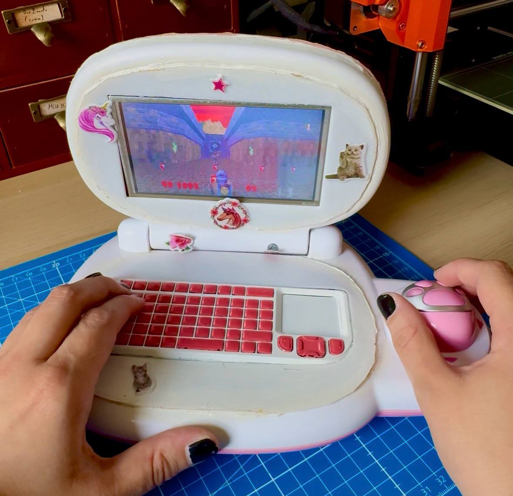
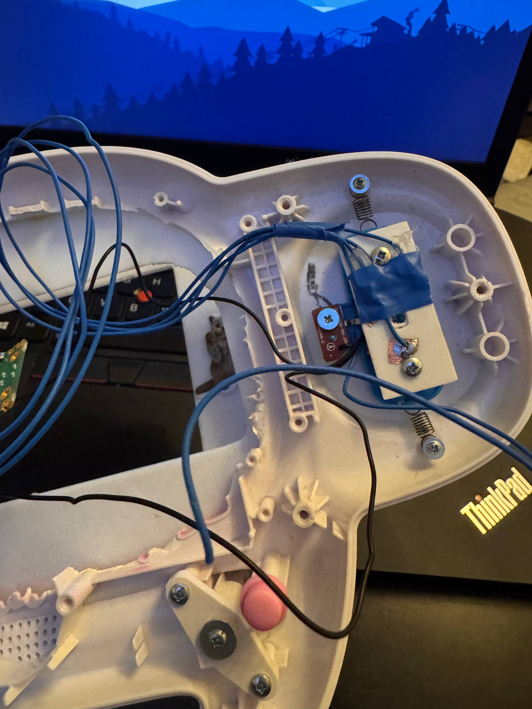
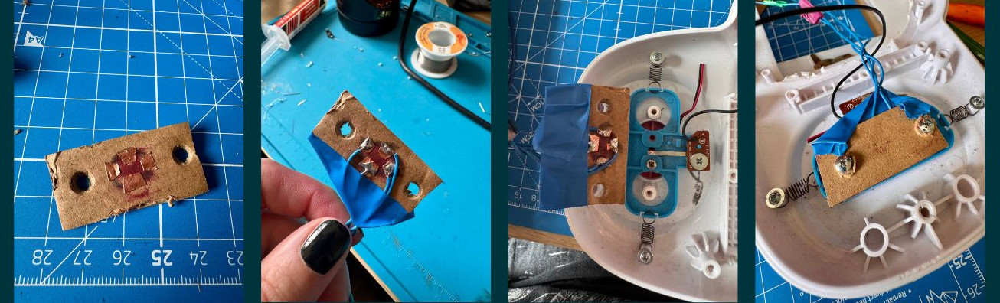
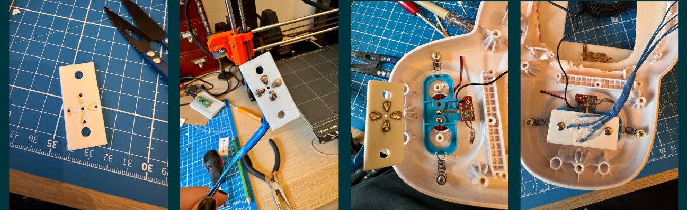

The PinkPad's Paw Mouse Explained

An A-Paw-Priate Mouse for the PinkPad
As if the PinkPad wasn't black metal enough already in its pinkness, it also comes with the most hardcore integrated mouse you could imagine: a little pink paw (and its toe beans are the mouse buttons). And let's face it, that thing is carrying the whole project.
Naturally, the masses (i.e. the two people who actually read my posts to the end) were shocked when I mentioned in my PinkPad post that "it stopped working".
But fear not, its functionality has been...not exactly fully...but at least sufficiently restored.
To understand what "stopped working" meant back then, let's take a quick look at how that mouse originally worked (approximately, it's been six years since I saw the original and I'm getting old):
That little paw is a lot less sophisticated, yet so much more charming, than the mice we know from our modern gaming setups. Under that little pink shell, there's just a thin, needle-shaped metal piece that scrapes over four metal pads. Each metal pad maps to one direction: up, down, left, right. That means you get eight directions in total (the diagonals happen when the needle touches two adjacent pads). Easy. You know that principle from your gaming controllers.
But with so many things that seem pretty f*cking easy with the PinkPad, the devil's in the detail. Because a huge part of that paw's charm is its tininess. Which, in turn, you may have guessed it, also makes things somewhat delicate. One slightly too enthusiastic turn of the paw and the metal needle opts out.
And back then, that was exactly what happened. At this point, that would have been a quick fix: open up the PinkPad, bend the needle back, done.
Unfortunately, past me got distracted at some point in the process between opening it up and bending the needle back. Because I clearly removed the part that carried the metal pads (a small PCB if I recall correctly)...and never put it back. Six years and one move across the country later, I do remember that I put it somewhere safe, and that wherever that was, it's not inside the PinkPad.
So to get it back to tolerable functionality, I had to get a little unorthodox in my methods (so yeah, same as usual actually, to be fair). Sure, butchering an innocent standard mouse and transplanting its insides into the paw would perfectly match the PinkPad's black metal vibe. But I love things that work because they're so stupidly simple, so I wanted to preserve the original mouse mechanism as far as possible.
And I'd say I managed to do so, at least in its true, flimsy spirit. It's good enough to play Doom with it and comes with the bonus feature that I can totally blame the paw for sucking at the game.
Let's have a look at the slightly escalating process, from paw mechanics to HID cosplay and functionally neccessary paw print mouse cursour trails.

Everything can be a PCB if you just believe in it hard enough
Since the original paw PCB is stored at a safe yet currently unknown location, the first thing I needed was a substitute PCB. And while I had a lot of PCBs of questionable usefulness fabricated before, firing up fab for just four copper pads seems a little wasteful, even to someone like me (will I still do it at some point? Oh, I have plans to make it make sense).
As any professional engineer, the first things that came to my mind for this were cardboard and tape. And for calibration, just to figure out where the needle moves and makes contact, that was more than enough to get the job done.

Later, when I was fairly confident about the needle's radius and copper pad size, I converted the "design" into a "proper" 3D-printed piece. Generally, 3D-printed sheets and copper tape really make great makeshift PCB prototypes. However, in this particular case, with the needle constantly scratching over the pads, it needed a little more sophistication than mere copper tape on PLA. And when I say sophistication, I mean drown that shit in solder, both sides, more is more, pour all your unresolved attachment issues onto that plastic until it will never move again.

The resulting masterpiece in craftsmanship is sturdy enough to survive for a while and comes with a hole in the middle so a) the needle has a calibrated default point where it doesn't make contact with metal (and therefore moves the mouse) and b) so I can see where the needle currently is and de-stuck it if necessary.
While in the process of lovingly and diligently restoring that mouse mechanism, I also wanted to give the mouse button new and less battle-worn wires. And broke it as well.
The button's just a simple metal-sheet push button under the toe beans, yet another tiny PCB. When I lifted said beans, the PCB's pads came crumbling down. So I had to deploy yet another engineering feat: scratching the copper traces free to re-attach wires.
So, how much of the original paw mouse mechanism is still intact afterwards? Well, as I said, I preserved its spirit. It's held together by at least as much optimism as the original.
HID mouse cosplay
The RP2040 (and therefore the Raspberry Pi Pico) comes with the wonderful capability to expose itself as a HID with the help of TinyUSB. And arguably, since the paw interfaces humans and is a device in its own way, it deserves to be treated as a proper and respectable Human Interface Device by the kernel, just like any other computer mouse.
Each pad of our makeshift PCB and the mouse button are connected to one GPIO of the Pico. Code-wise, the core of our actual "paw to cursor movement" lives in paw. Here we specify what happens if our metal needle touches one (or two) of the pads: if we're on up, we keep progressing up, if we're on down, down. I guess it's kinda self-explanatory and yes, it really is that simple ;)
usb is where we make the paw cosplay as a totally respectable and entirely unsuspicious HID. All with a completely serious VID/PID and "product string":
...
#define USBD_VID 0xCafe
#define USBD_PID 0x1337
#define USBD_BCD 0x0100
...
And all the other things we need to pass as HID live here as well: HID report descriptor, HID interface, endpoint, polling, and so on.
tusb is our TinyUSB glue: RP2040, USB device mode, HID enabled...we don't want to be much. Just mouse.
Make the cursor pass the vibe check
At this point we could have been done. But it would feel somewhat disrespectful to leave the PinkPad with a boring, arrow-shaped standard mouse cursor.
So naturally it has to become a paw as well.
Changing the mouse cursor's icon into a little paw is among the easier parts of the whole PinkPad process. And you can use these steps to change it into any mouse icon, of course:
First, find or create a 32x32 and 64x64 pixel paw PNG (32 is the sweet spot imho, 64 looks comically and adorably large, but is somewhat impractical).
Then install the tool needed to compile X cursor files:
sudo pacman -S xorg-xcursorgen
Create a proper cursor theme folder instead of keeping the PNGs loose in the home directory:
mkdir -p ~/.icons/PinkPaw/cursors/src
Move the paw cursor PNGs into the theme source folder:
mv ~/paw_mouse32.png ~/.icons/PinkPaw/cursors/src/
mv ~/paw_mouse64.png ~/.icons/PinkPaw/cursors/src/
Create the cursor definition file:
cd ~/.icons/PinkPaw/cursors/src
emacs left_ptr.in
The cursor definition maps image sizes to PNG files and defines the hotspot. The hotspot is the actual click position. For this paw cursor, bottom center works best:
32 16 30 paw_mouse32.png
64 32 60 paw_mouse64.png
Compile the cursor definition into an X cursor file:
xcursorgen left_ptr.in ../left_ptr
Create the theme metadata file:
emacs ~/.icons/PinkPaw/index.theme
Use this as the theme metadata:
[Icon Theme]
Name=PinkPaw
Comment=Pink paw cursor theme
Create aliases for common cursor names so applications do not fall back to the boring default cursor when hovering over terminals, text fields, or clickable areas:
cd ~/.icons/PinkPaw/cursors
for c in xterm text ibeam default left_ptr arrow pointer hand hand1 hand2; do
ln -sf left_ptr "$c"
done
Enable the cursor theme persistently through Xresources:
printf 'Xcursor.theme: PinkPaw\nXcursor.size: 32\n' >> ~/.Xresources
xrdb -merge ~/.Xresources
Load the cursor theme from the herbstluftwm autostart script as well, so it survives reboot/session startup properly:
xrdb -merge ~/.Xresources
export XCURSOR_THEME=PinkPaw
export XCURSOR_SIZE=32
So, now that we have a paw as a mouse cursor, the next step kinda defines itself. Because what do paws leave? That's right, little paw tracks across the screen.
For the paw trail effect I use a small PyQt6 overlay application. It's just a script that creates a transparent fullscreen window on top of the desktop and continuously tracks the mouse cursor position.
As the cursor moves, it periodically places faded copies of the paw PNG along the movement path. They slowly fade out over time so it looks as if little paw prints are left behind.
A so-called compositor (picom with xrender in our case) is used for transparency.
The one game made for the PinkPad: DOOM
Is all of the above particularly elegant? Yeah, no. Does it at least work well? Also no. But it pretty (at least on the outside).
And more than good enough to play DOOM ;)
Which might also be the only thing I'll ever use a mouse for. As you may have noticed, I use herbstluftwm on the PinkPad, and not needing a mouse to navigate is definitely handy.